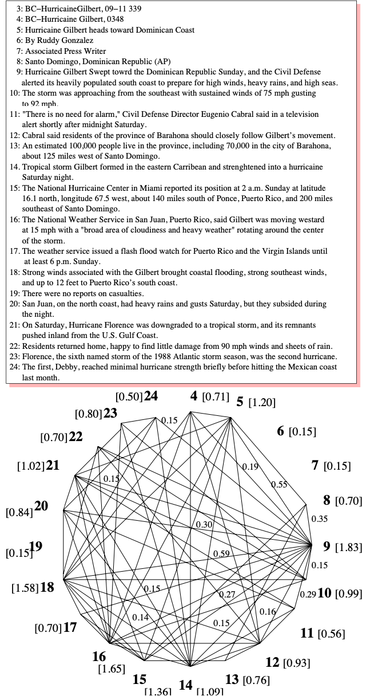

The TextRank paper publishes results on keyword extraction and sentence extraction. Sentence extraction is a processes of pulling (important) sentences out of a body of text which can be used as a summary of the whole text.
Sentence Extraction
TextRank for Keyword Extraction: TextRank fundamentally operates on graphs, thus the process of creating the graph is of much importance. The authors designed a connection heuristic based on the similarity of two sentences. The more similar the sentences, the stronger the connection. Their function to compare sentence similarity is quite simple, looking at the occurrence of shared tokens between the two sentences. They note that they normalize so not to promote only longer sentences.
Recommendation: The authors point out a really important point I think is crucial to understanding the power of PageRank and algorithms like it. The idea is that each node in the matrix casts votes (in one way or another) and you can think of that voting as a recommendation of sorts. What PageRank offers is an algorithm to determine the importance of nodes in a complex voting election. What this paper excels at in my opinion is the application of that recommendation algorithm to the inherit voting that can be anthropomorphized in a body of text. In sentence extraction, each sentence is casting a vote for other sentences based on its content, and the TextRank algorithm helps sort out the most important of sentences. The non-obvious outcome of that is the sentences that summarize the whole work will rise up the importance ladder to identify summary statements.
Example: Recreating figure 3 from the paper, you are able to see how like sentences vote for each other. I think it is worthwhile to study the figure for a while.

Why TextRank Works Well: The authors provide a few reasons why they see TextRank to work. A few compelling ideas I think they have are:
- Global reach: the algorithm is able to compute on the whole body of text at once
- Unsupervised: it doesn’t need to transfer knowledge from anywhere else
Conclusion
And one concluding remark I have is the power of the PageRank algorithm to solve a variety of tasks is analogous to machine learning. Taking the same problem applied to seemly very different tasks still provides great results because there is something fundamental about the underlying algorithms that are powerful. This was a fun way to see Pagerank used in other contexts, and how simple linear algebra can lead to remarkable results.